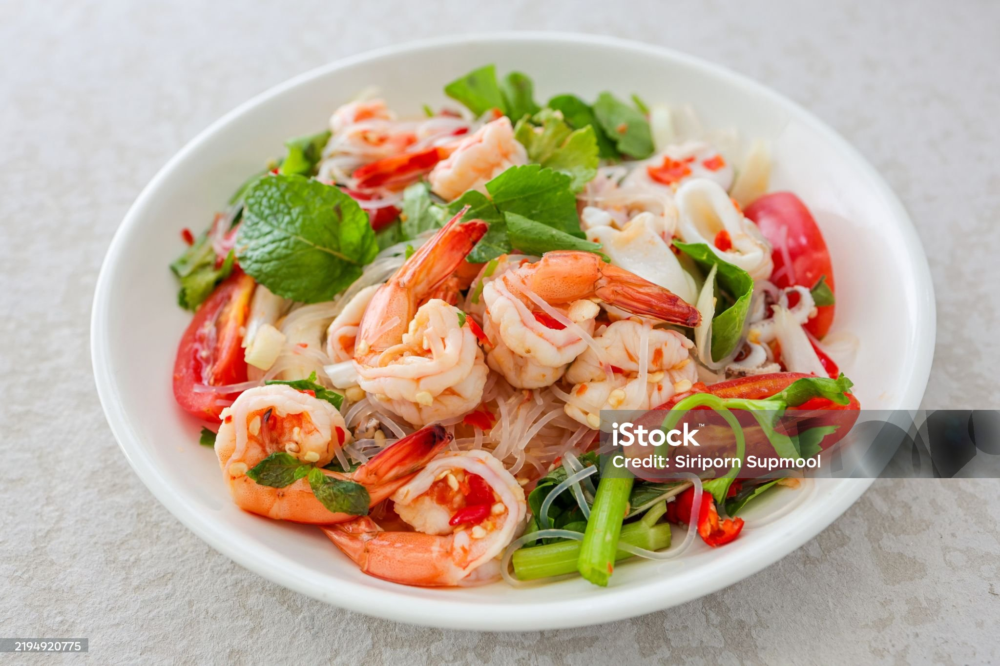

Shrimp Pasta Salad

Description
Shrimp Pasta Salad is a light, refreshing dish, perfect for summer gatherings or a quick lunch.
Ingredients
- 8 oz pasta (rotini, penne, or bowtie work well)
- 1 lb cooked shrimp (peeled and deveined)
- 1 cup cherry tomatoes, halved
- 1 cup cucumber, diced
- 1/2 cup red onion, thinly sliced
- 1/2 cup celery, finely chopped
- 1/4 cup fresh parsley or dill, chopped
- 1/2 cup mayonnaise (for creamy version)
- 2 tbsp sour cream or Greek yogurt
- 1 tbsp Dijon mustard
- 1-2 tbsp lemon juice
- 1-2 tsp Old Bay seasoning (optional, for added flavor)
- Salt and black pepper, to taste
Steps
- Boil water in a large pot with a pinch of salt.
- Add 8 oz of pasta and cook until al dente (firm to the bite).
- Drain, rinse under cold water to stop cooking, and set aside.
- In a mixing bowl, whisk together: 1/2 cup mayonnaise,2 tbsp sour cream or Greek yogurt,
1 tbsp Dijon mustard, 1-2 tbsp lemon juice,1-2 tsp Old Bay seasoning (optional), Salt and pepper, to taste
- Set aside in the fridge to chill.
- Slice 1 cup cherry tomatoes, dice 1 cup cucumber, thinly slice 1/2 cup red onion, and finely chop 1/2 cup celery.
- If your shrimp is not yet cooked, lightly sauté or boil it until pink and opaque, then cool completely.
- In a large bowl, mix together: Cooked and cooled pasta, Shrimp, All chopped vegetables, Chopped parsley or dill
- Pour the dressing over and gently toss to coat everything evenly.
- Refrigerate for at least 30 minutes before serving to let the flavors meld.
- Serve chilled, optionally garnished with a lemon wedge or extra herbs.
Home